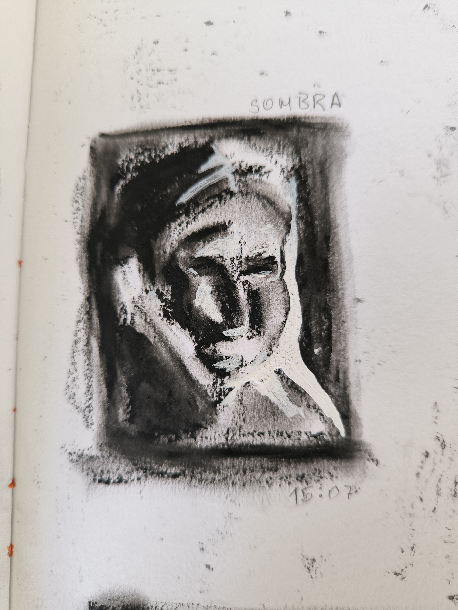

Sketchbook Secreto
Fragmentos em bruto, ensaios inacabados, falhas bonitas — esta é a parte que raramente se mostra.



Fragmentos em bruto, ensaios inacabados, falhas bonitas — esta é a parte que raramente se mostra.
Não são obras acabadas. São respirações.
Esboços que falam antes de serem entendidos.
Cada falha é uma fresta. Cada risco, um grito silencioso.
Este diário não busca ordem — ele confessa.
É aqui que a arte se desarma. Onde o caos é bem-vindo.
Se não fizer sentido... é porque ainda está vivo.